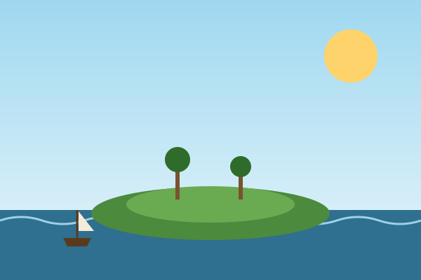
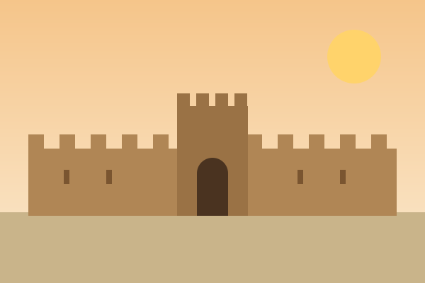
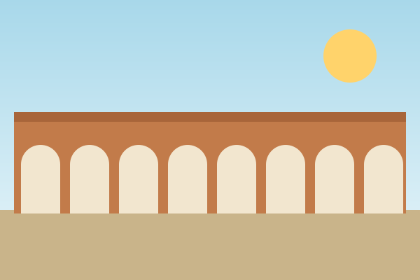
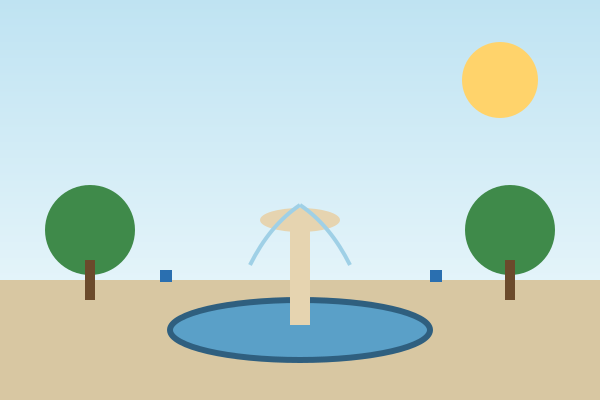
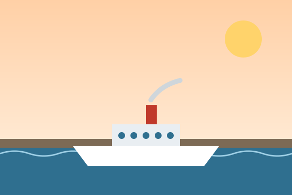

Un paseo por la historia de la ciudad, de la Edad Media al siglo XX.

Isla Verde · 711
Base de las tropas de Tarik; de ella viene el nombre árabe Al-Yazirat Al-Hadra.

Villa Nueva meriní · 1285
Termina la construcción de la nueva villa amurallada, al otro lado del río de la Miel.

Acueducto «Los Arcos» · 1777
Llevaba agua a la ciudad refundada desde un manantial cercano.

Plaza Alta · siglo XVIII
Construida en la expansión urbana tras la refundación; remodelada en 1807.Hotel Reina Cristina · 1906
Alojamiento de los delegados durante la Conferencia de Algeciras.

Junta de Obras del Puerto · 1906
Origen del actual Puerto Bahía de Algeciras, impulsado tras la llegada del tren (1892).